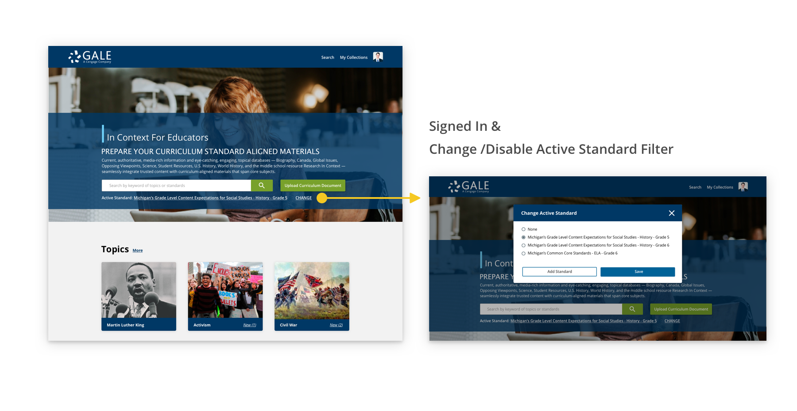
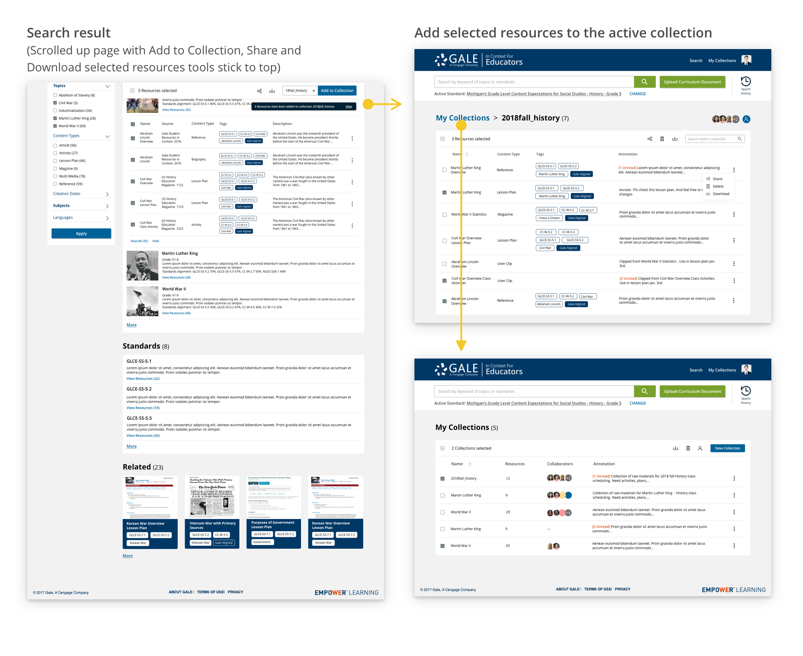

In Context for Educators is a new Gale product specifically designed for K-12 educators, which meets their needs in finding, curating and using curriculum standard based materials.
UX Intern @ Gale, Cengage Learning
June 2018 - Aug. 2018
Mentor: Thomas Piggott (Senior UX Designer)
Tools: Axure, Sketch
While preparing teaching materials and classes, K-12 educators have several needs, and the three major needs are:
Currently there is no product which fully covers all these needs, so the preparing process requires a lot of manual effort. As one of the biggest content provider in the US, it's an opportunity for Gale, Cengage Learning to provide an ecosystem with rich content where educators can prepare all their curriculum standards aligned materials.
After analyzing research results, we categorized and listed all user needs and created 12 personae for major needs. In order to prioritize user needs, in the meanwhile, define the scope of product and make sure it is sell-able and technical feasible, we conducted a persona mapping session with VP, PM, tech lead, sales, marketing, and specialists.
After persona mapping, I created a roles and goals matrix with hierarchic goals and the 6 selected personae. The weight of each goal was different according to the importance of each persona. Overlapping goals and special goals for some personae are obvious in the matrix. Prioritized goals of our product are:


For each selected persona, we analyzed the user scenarios based on different "variables". Using our primary persona, Henry, as an example, to achieve the same goal - finding replacement materials, there are three major scenarios.
Based on the scenarios and important goals we got, my mentor and I together designed several variations and converged into two major concepts. I'll focus on the concept I was responsible for.

1. Set active curriculum standard to filter out matching materials
2. Upload curriculum document to bunch search

3. Show material and standard alignment with tags

1. Create collections
2. Manage materials and collaborators


Since we provide e-education enterprise solutions, we usually will not release a new product and sudden changes during semesters to avoid training costs on our customers' side. Educators are super busy at the end of summer preparing for the new semester, and considering the team planned several in-person testing sessions a month later, so it wasn't a good time for me to conduct research in the end of my intern project.
If I have more time...
Participate in conducting user evaluations to test on our concepts to iterate and converge to one final design.
Curriculum standards and materials alignment is a great technical challenge for our product, which also leads to possible design decisions to compensate the inaccuracy of algorithm.
If I have more time...
Design a user assessment system for user to evaluate the accuracy of the alignment and in the meanwhile we can use the evaluation to improve the algorithm.
We spent almost two months analyzing research results, creating our personae and defining the scope of product. And involved people from other groups in several important meetings to get everyone on the same page, decide the overall project time-line, technical feasibility, and so on. And I learned how to create personae based on rich research results and map personae taking suggestions from different perspectives.


Research Analysis, Personae Creation, Workflow Analysis, Workflow and Sketch